At the intersection of architecture, scenography, heritage and ritual — interpreting India's civilisational depth into spaces, ceremonies, and cultural experiences that endure.
TDX Studio is a multidisciplinary cultural studio working at the intersection of architecture, scenography, heritage, and experiential storytelling. We collaborate with governments, institutions, and cultural bodies to create spaces and experiences that reflect India's civilisational depth, contemporary identity, and future aspirations.
Every project is treated as cultural infrastructure — designed not for the inauguration day, but for the decades after.
Spaces of ritual, opulence, and gathering — designed as scenography, not decoration. The grammar of an exhibition is the grammar of a film.
Tina's practice began in film and television — over two decades of art direction across 200+ productions, building 500+ cinematic sets that translated stories into spaces audiences inhabited emotionally.
TDX Studio is the evolution of that craft into a wider domain — from cinematic sets to cultural infrastructure, from sets that lived for an episode to spaces that hold civilisational memory.
Three principles guide every project we undertake — translating intangible cultural depth into tangible spatial experience.
Grounded in research, archives, and lived traditions. We begin with the source — texts, testimonies, regional narratives — never with a moodboard.
Expressed through modern spatial language, materials, and technology. Heritage is not a costume — it is a foundation to design from, in the present tense.
Designed for relevance beyond events and inaugurations. Every project is conceived as a long-form cultural asset — adaptable, reusable, enduring.
The studio works across six interconnected disciplines — from one-night ceremonies to permanent cultural districts. The scale changes; the discipline does not.
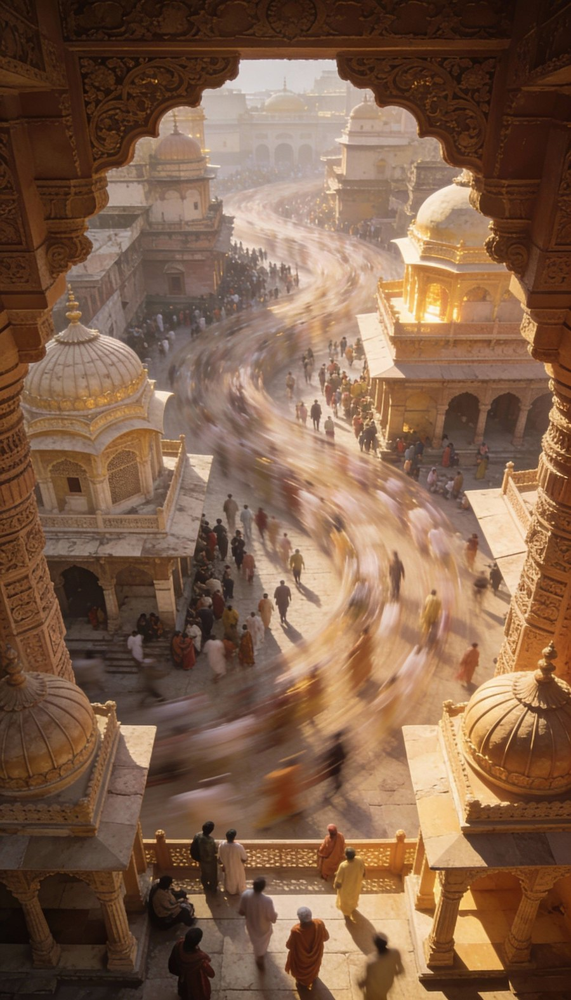
i.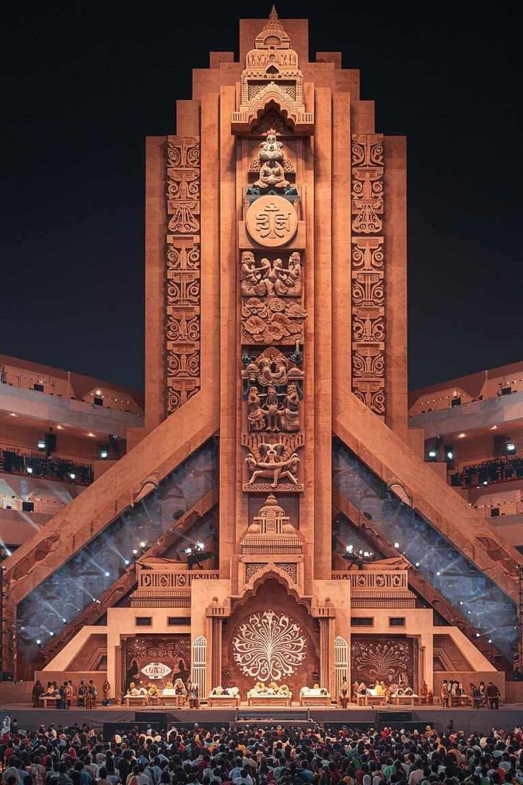
ii.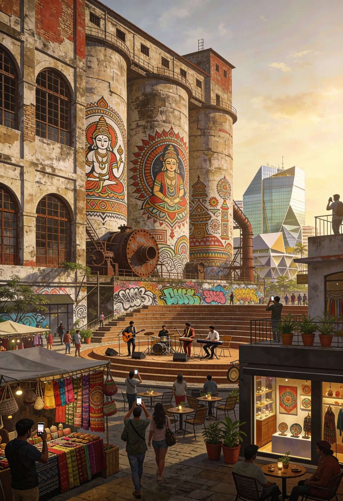
iv.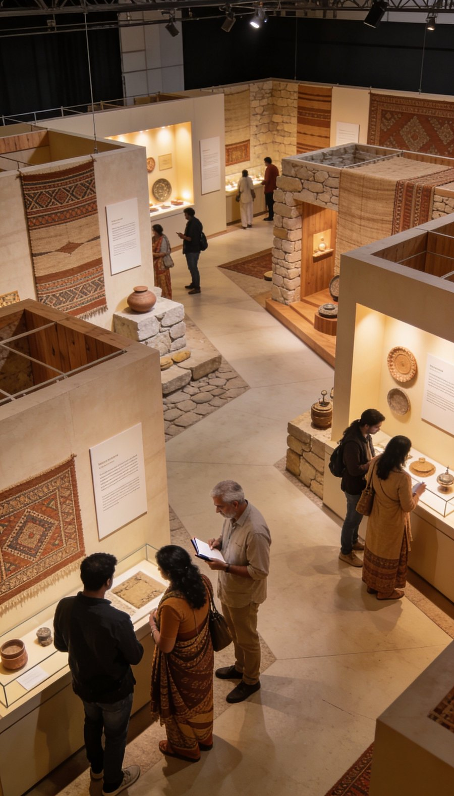
v.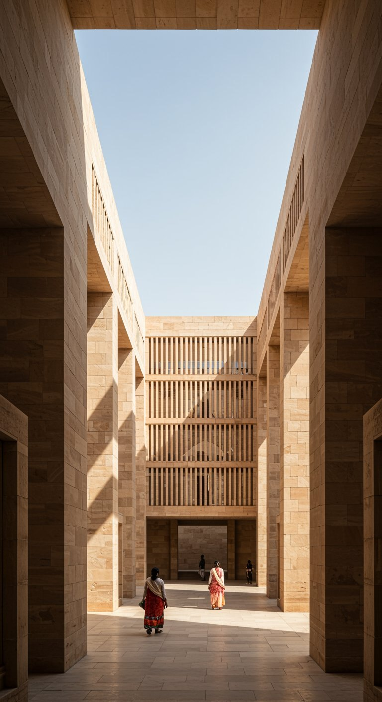
vi.Before TDX, there were two-and-a-half decades of film and television art direction — period epics, mythological worlds, domestic dramas, social storytelling. The set was the first laboratory for everything the studio now builds at civic and national scale.
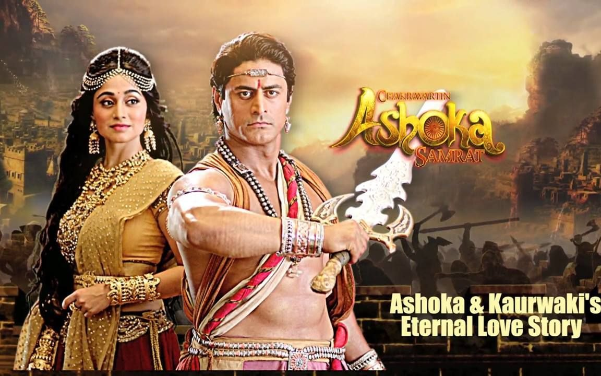
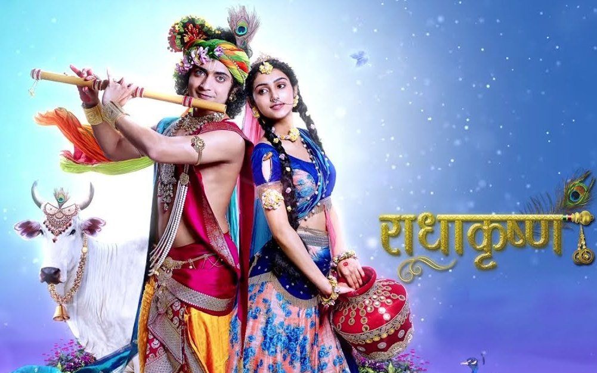
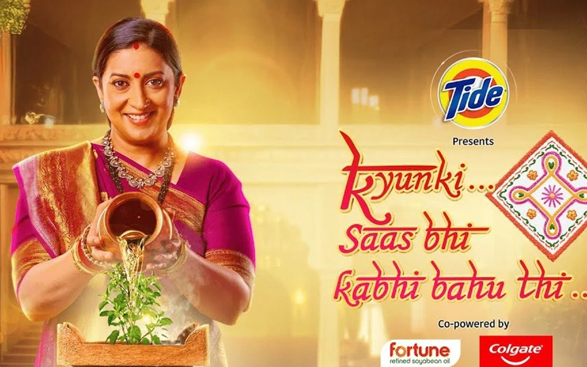
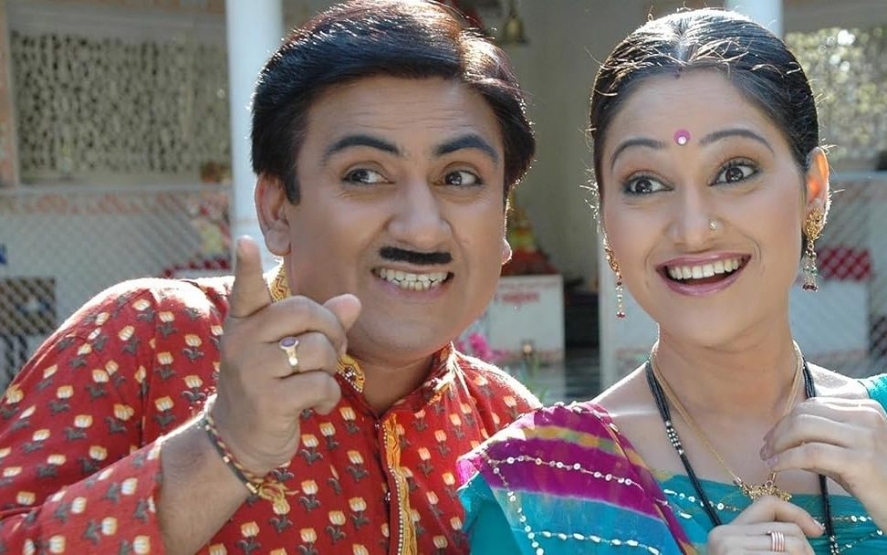
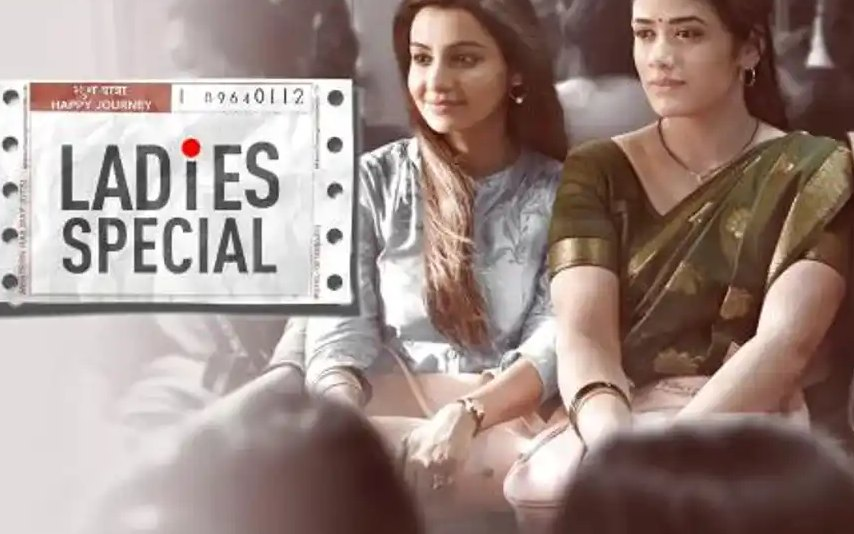
Cultural infrastructure is built on the ground — on scaffolding, on construction sites, in studios reviewing blueprints, in conversations with directors and crews. The visible result is the smallest part of the process.
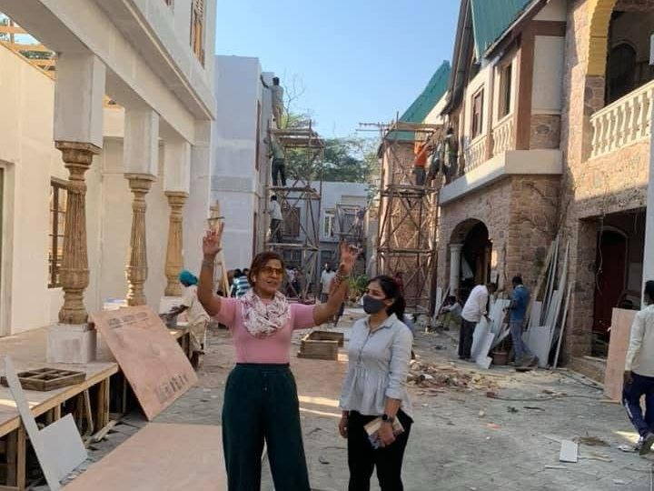
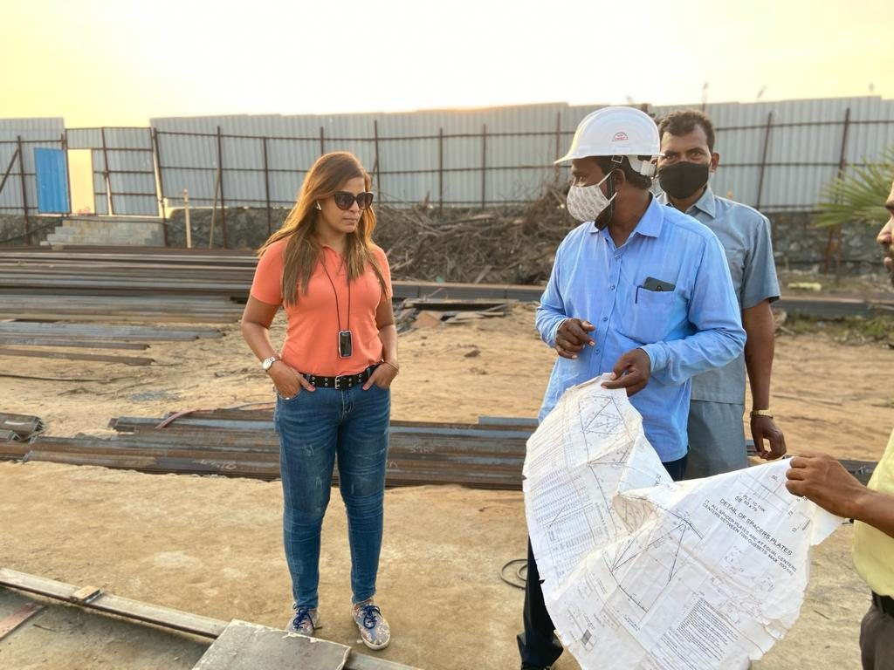
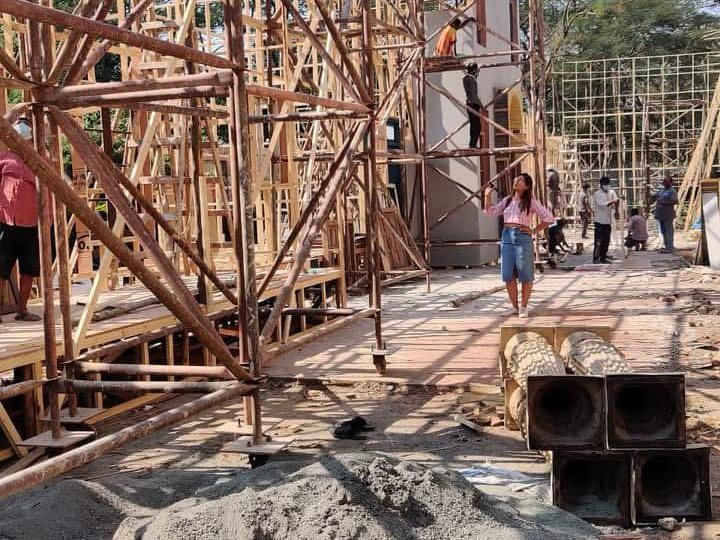
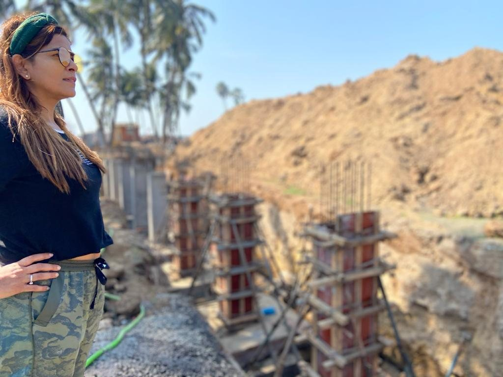
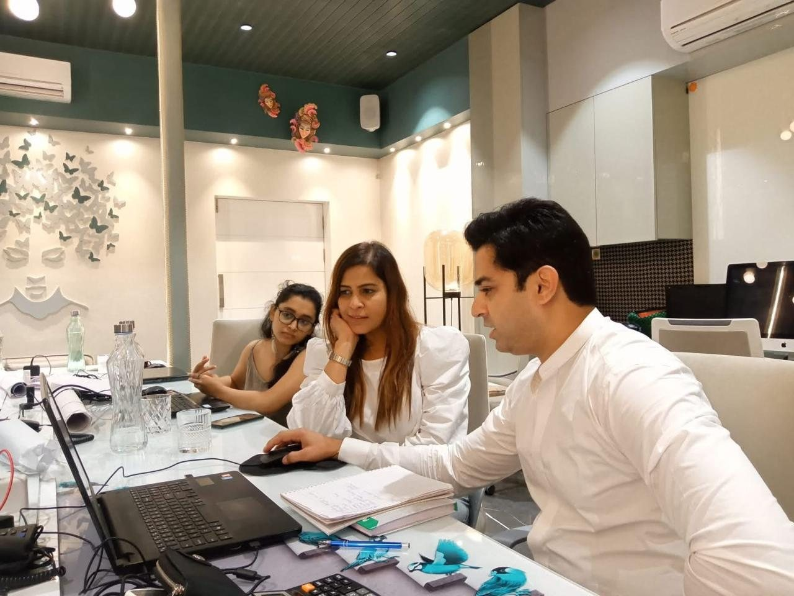
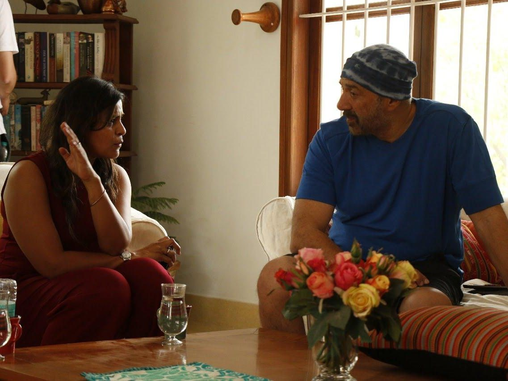
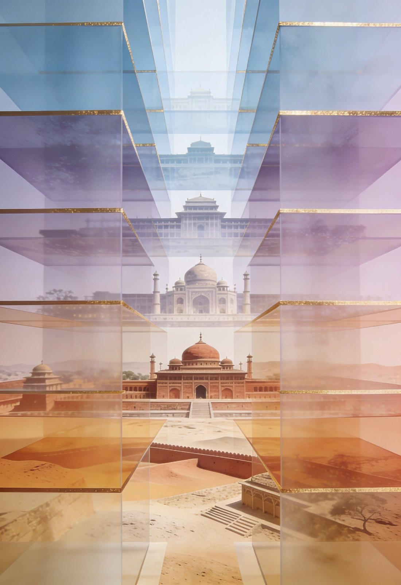
Archives, oral histories, regional narratives, stakeholder consultations — the foundation, before any line is drawn.
Translating history and ethos into a spatial journey. Sequence. Pacing. Reveals. The grammar of an exhibition is the grammar of a film.
Architecture, scenography, materials, light, sound. The five disciplines composed as one experience.
Multi-agency coordination, compliance, on-ground supervision. The studio is present from blueprint to installation.
Reusability, adaptability, long-term cultural value. We design for the second life, the third life, the tenth life of the work.
Permanent cultural spaces — museums, interpretation centres, pavilions — where heritage motif meets contemporary form. The architecture itself becomes the medium.
Most studios are built for installations. We are built for institutions. Five differences define how we engage, decide, and deliver.
Research-led storytelling — not theme-based design.
Comfortable with sensitive cultural, historical, and political narratives.
Integration of architecture, scenography, and ritual thinking under one studio.
Equally fluent across temporary, permanent, and city-scale projects.
Structured for long-term institutional partnerships — not transactional commissions.
For institutional collaborations, government commissions, cultural ceremonies, museum projects, and long-form cultural partnerships — write to the studio.